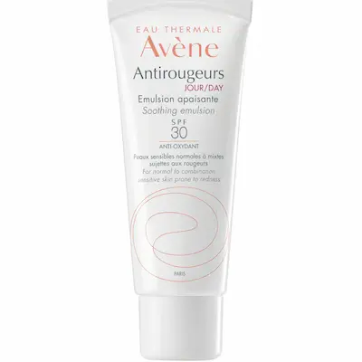
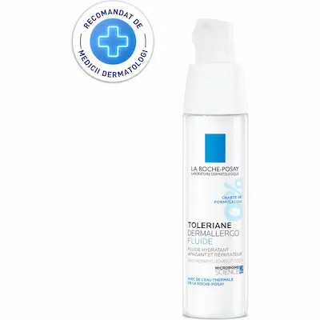

Розацеа — это не просто «чувствительная кожа», а хроническое
состояние сосудов, требующее бережного контроля и защиты барьера.
Розацеа — это не просто «чувствительная кожа», а хроническое
состояние сосудов, требующее бережного контроля и защиты барьера.
Что такое розацеа?
Розацеа — это хроническое воспалительное заболевание, поражающее преимущественно сосуды лица. В отличие от обычной чувствительности, это стойкое нарушение микроциркуляции, которое проявляется в виде приступообразных покраснений (флашинг), стойкой эритемы и видимых сосудистых «звездочек» (телеангиэктазий).
Важно отличать розацеа от акне. При розацеа покраснение вызвано расширением капилляров, а не закупоркой пор. В условиях Молдовы, где лето жаркое, а зимы ветреные, кожа с розацеа постоянно находится в состоянии стресса, что без правильного ухода приводит к переходу болезни в папуло-пустулезную стадию.
Признаки розацеа и реактивность сосудов
Основные симптомы включают «пылающее» лицо после горячего чая, острой пищи или бокала вина (традиционные триггеры в Молдове). Со временем краснота перестает проходить самостоятельно, становясь постоянным спутником. Кожа в зонах поражения (щеки, нос, подбородок) часто ощущается горячей на ощупь и стянутой.
Обострения часто связаны с поврежденным эпидермальным барьером. Жесткая вода и сухой воздух от кондиционеров в Кишиневе истончают защитный слой, делая сосуды еще более беззащитными перед внешними факторами. Правильный уход направлен на «тренировку» сосудистой стенки и мгновенное успокоение нейрогенного воспаления.

Правила ухода при розацеа
Лучшие средства при розацее


Компоненты, которые успокаивают и укрепляют сосуды
| Ингредиент | Действие |
|---|---|
| Азелаиновая кислота | Золотой стандарт: снимает воспаление, уменьшает красноту и борется с высыпаниями |
| Ниацинамид (Niacinamide) | Укрепляет защитный барьер, снижает реактивность и успокаивает жжение |
| Экстракт Центеллы (CICA) | Мгновенно снимает раздражение, охлаждает и помогает коже восстановиться |
| Троксерутин / Каштан | Венотоники: укрепляют стенки капилляров и уменьшают видимость сосудистой сетки |

Чего нельзя делать при розацеа?
Как снизить реактивность сосудов?
При розацеа сосуды теряют способность вовремя сужаться, оставаясь в расширенном состоянии. Это приводит к ощущению «горящего лица» и стойкой красноте. Главное правило: максимальное охлаждение и защита — используйте средства с физическими фильтрами и избегайте агрессивных активов в периоды обострений.
Ищите косметику с физиологическими липидами (церамидами), которые «залатают» дыры в защитном барьере. Это снизит чувствительность кожи к внешним раздражителям, таким как ветер или пыль, и поможет сосудам находиться под надежной защитой эпидермиса, уменьшая частоту вспышек красноты.

Внешние факторы и образ жизни в Молдове
Для жителей Молдовы розацеа часто обостряется из-за пищевых привычек и климата. Острые блюда, маринады и традиционное домашнее вино расширяют сосуды. Летний зной Кишинева в сочетании с активным солнцем требует обязательного ношения широкополых шляп и использования минеральных санскринов.
Зимой в нашем регионе критически важно защищать лицо от сухого ветра и мороза с помощью плотных «колд-кремов» (но без комедогенных масел). Помните: розацеа — это образ жизни, где контроль внешних триггеров играет не меньшую роль, чем правильно подобранный аптечный уход.
Часто задаваемые вопросы о розацеа
Можно ли полностью вылечить розацеа?
Розацеа — это хроническое состояние, которое нельзя «вылечить» навсегда, но его можно успешно перевести в стадию длительной ремиссии. С помощью азелаиновой кислоты и исключения триггеров можно добиться чистого лица без видимых покраснений.
Удаляют ли кремы видимую сосудистую сетку (купероз)?
К сожалению, косметика не может «стереть» уже расширенные капилляры. Кремы с венотониками (троксерутин, каштан) могут лишь уменьшить красноту и предотвратить появление новых сосудов. Для удаления старой сетки потребуются лазерные процедуры в клиниках Кишинева.
Почему розацеа обостряется после пребывания на солнце?
Ультрафиолет — главный враг сосудов. В условиях жаркой Молдовы солнце провоцирует выброс медиаторов воспаления и расширение капилляров. Без минерального SPF лицо быстро покрывается пятнами и может появиться чувство сильного жара (флашинг).
Помогает ли диета при розацеа?
Да, питание напрямую влияет на состояние сосудов. Для контроля розацеа в нашем регионе рекомендуется ограничить употребление острых блюд, очень горячих напитков и красного вина, так как они вызывают мгновенный прилив крови к лицу и провоцируют вспышки заболевания.